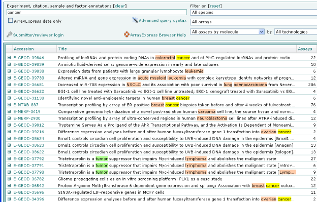

Frequently Asked Questions about EFO
EFO Introduction
- What is EFO?
- How can I query EFO?
- What is EFO used for?
- Which ontologies do we combine from and why?
- How are ontologies combined in EFO?
- Does EFO cross reference other ontologies?
- How is EFO structured?
- How is EFO edited?
- How often is EFO updated?
- How is EFO quality controlled?
- How should I cite EFO?
Technical questions on EFO and ontologies
Adapting EFO for your needs
The Experimental Factor Ontology (EFO) provides a systematic description of many data elements available in EBI databases, and for external projects such as the NHGRI-EBI GWAS catalog. It combines parts of several biological ontologies, such as anatomy, disease and chemical compounds. The scope of EFO is to support the annotation, analysis and visualization of the data handled by the Functional Genomics Team at the EBI. We also add terms for external users when requested. For those of you new to ontologies, there is a 5-minute introduction to the subject available and a related blog post.
Use Ontology Lookup Service, or BioPortal, both offer a web interface to browse and query EFO and other ontologies
EFO is primarily used to annotate biomedical data from the EBI’s databases: the BioSamples database , the Atlas of Gene Expression and ArrayExpress. It's also used for the GWAS catalog and we are working to include annotations requested by external projects.
EFO is implemented in the ArrayExpress query interface, the Atlas query interface, in the Functional Genomics Team’s curation processes, and in the GWAS catalog diagram we are developing with our NHGRI colleagues and will shortly be used in Ensembl.
Below is an example query in ArrayExpress which uses EFO to fetch all types of cancer. Here the ontology is used to expand on everything that is a subclass of the class cancer in EFO and not just on anything exactly matching the word cancer.

EFO combines terms from a subset of ontologies which are: well designed, actively maintained, have definitions, provide suitable coverage and which are compatible with EFO or which are the definitive resource. This includes:
- ChEBI - chemical compounds and their roles
- Units ontology - SI and combinatorial units
- Gene Ontology - cellular component and biological process terms
- Ontology for Biomedical Investigation - experimental design terms, protocols
- NCBI taxonomy - Species and strains
- Basic Formal Ontology - Upper level terms though we simplify the use of this ontology to a small subset for our needs
Ontologies are combined by importing relevant classes from external ontologies into EFO. When a class is imported the original identifier is retained, i.e. the class URI are kept. This can cause some problems in browsers such as BioPortal and Ontology Lookup Service, but it's a clean way to combine ontologies. When a term is needed in EFO, and is in the scope but not present in one of our common import ontologies (ChEBI etc.), we ask for it to be added there and then import it into EFO once it’s made available.
Term request example response to antipsychotic drug was needed to annotate GWAS data. Gene Ontology has the term response to drug, so we asked Gene Ontology if they would add a new child term response to antipsychotic drug for us, and when it was added we imported it into EFO.
As well as importing terms directly we also cross references external ontologies from within EFO. This helps us with data integration. For example, the PRIDE database uses the Brenda Tissue ontology to annotate their data whereas the BioSamples database uses EFO. EFO and Brenda terms are mapped using an annotation property called definition citation, so an EFO query of BioSamples can also present data in PRIDE.
Mapping to other ontologies is done lexically and the results are validated by an expert i.e. we check for exact string matches between the class labels and synonyms from EFO and a target ontology. If an exact match is found, it is first checked and then the ID of the external class is added as an annotation on the relevant EFO term.
Sometimes we also import the synonyms. Synonyms can support more powerful queries but can also cause problems. Synonyms can mean different things in different contexts therefore care must be exercised when performing lexical matching.
Synonym example
cortex can refer to a brain part, or the cortex of the kidney. For this reason we are conservative and check lexical mappings and often remove imported synonyms when they cause problems.
Cross reference example
connective tissue is an EFO term with an EFO identifier. It has been mapped to several terms from other ontologies, including the Brenda term BTO:0000421, which is the identifier for connective tissue in Brenda.
EFO has the notion of top level, imported and native classes.
EFO top level classes are at the top of the EFO term hierarchy and are used to structure the ontology and provide an axes of classification. This helps us to be consistent in where we place new classes.
For example, process - this is equivalent to the Basic Formal Ontology processual entity and uses the same identifier (URI). It has been renamed process to make it easier to understand for our users. We have also omitted some of the extra structure that exists in ontologies such as BFO to simplify the ontology. Our primary axes of classification are; Process (e.g. running an assay), Information (e.g. gene list), Materials (e.g. cells), Properties of materials (e.g. colour, disease) and Site (e.g. sampling site).
Imported classes have been imported from other ontologies; this means we reuse their URIs and the intended meaning of the class, though we sometimes add synonyms or alter the textual definition to make it more palatable and understandable to our user community (who are primarily biologists and not ontologists). This often means removing ontology speak from the definitions such as upper ontology words (e.g. realizable entity) which are meaningless to our users. Most often, we simply import the class and definition into EFO, such as biological process from the Gene Ontology.
EFO native classes exist only in EFO. For example, the ‘A204 cell line’ was added as it’s used in a database that uses EFO for annotation. There is an ontology of cell lines, but primary cell lines are out of scope for the cell line ontology, so we add these to EFO.
EFO may be edited manually or programmatically. Manual edits are done using the ontology authoring tool Protege (version 5.2). Programmatic edits are made using the OWL-API, for example, to change a set of URIs or other systematic changes and through our suite of EFO tools. EFO is stored in a software versioning system (SVN).
EFO is updated daily and released on the 15th of the month or the soonest following weekday. A monthly release schedule allows us to add terms requested by external users and our own curators and to map these terms to our databases such as the Atlas of Gene Expression. You can sign up for release emails via the EFO mailing list or read the latest Release Notes.
EFO runs on a continuous integration platform we have developed over a number of years which checks for several potential sources of error after every edit (and subsequent commit to our code base). This includes checking for missing labels, badly formed URIs, invalid namespaces, trailing whitespace and duplication of labels and synonyms. EFO is also reviewed regularly at each monthly release by the developers, and also by external experts by invitation. If you find an error in EFO, or have style suggestions please send us an email to EFO user list or create an issue ticket on our GitHub.
This paper is available under an open access agreement from the Bioinformatics Journal.
You can generate a human-readable summary of changes between any two EFO versions using our Bubastis tool. This performs a logical diff between the EFO files available for download from GitHub showing which classes are new, which have been changed and which are removed. The most recent release version of EFO is always the most current and is updated at least monthly. We also include a summary of changes in the release notes.
EFO is available as an OWL format file and as an OBO format file (converted from OWL) - both are available on our GitHub repository. OWL files can be read into the Ontology editing tool Protege, and the OBO file can be read into Protege or OBO-Edit. We use Protege to edit EFO.
Protege is a browser and editor for OWL files, developed by our colleagues at Stanford who provide documentation. Protege is a powerful tool with a steep learning curve, so if you are in EBI we can show you if you buy us a coffee. Or you could attend one of the courses on Protege OWL run by us, or the Bio-health Informatics group in Manchester.
To look at EFO in Protege download and install Protege (we use version 5.2) and the most recent release of EFO from our GitHub repository. The Protege tool has a steep learning curve, so we recommend reading the user documentation. If you simply want to explore or search EFO using a browser use BioPortal or OLS.OWL is the Web Ontology Language. OWL is both a format and a language used to represent ontologies. It can be read and written by the Protege editor that is used to edit EFO, and also processed programmatically via the OWL-API. OBO format is an alternative language and format for ontologies developed by the GO project.
Yes, OBO to OWL conversion generally works well, OWL to OBO can be lossy, though we have good results with the OBO Ontology release tool (Oort). We use this to produce the OBO version of EFO.
Phil Lord has a useful site Ontogenesis which has vignettes on ontologies, we helped him write it. There are two conferences at which bioontologies are presented: ICBO and the ISMB BioOntologies special interest group. James Malone (an EFO developer) also writes a blog: http://jamesmaloneebi.blogspot.co.uk/
Please use GitHub to request terms (note that our older SourceForge tracker and JIRA tracker are no longer used). All user requests are assigned to a developer and scheduled for a release. If you are working inside EBI please feel free to come along and see us with your list and we will talk through it with you. It is worth noting, that for terms that are of interest to other community developed reference ontologies such as the Gene Ontology and ChEBI, we often submit these terms to those ontologies for inclusion (assuming privacy issues permit).
Yes! Many of the tools we use to build EFO are made available for external use. These include tools for building, validating and comparing ontologies, and tools which use ontologies, for example, to annotate data. You can find detailed descriptions of these tools on our home page.
If you would like to browse EFO we suggest using OLS.